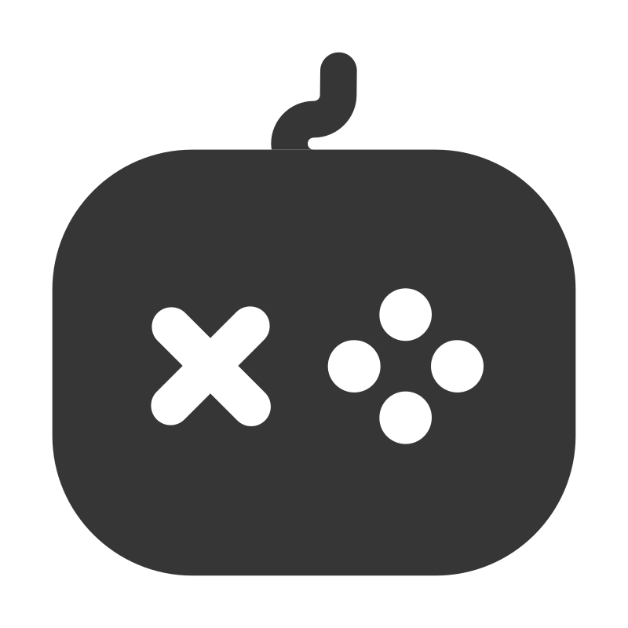
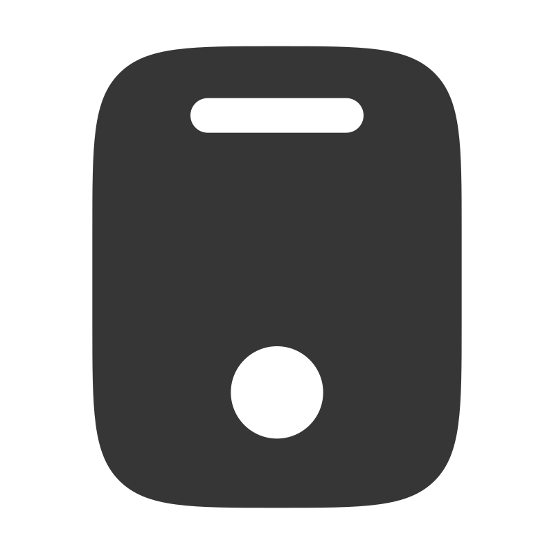
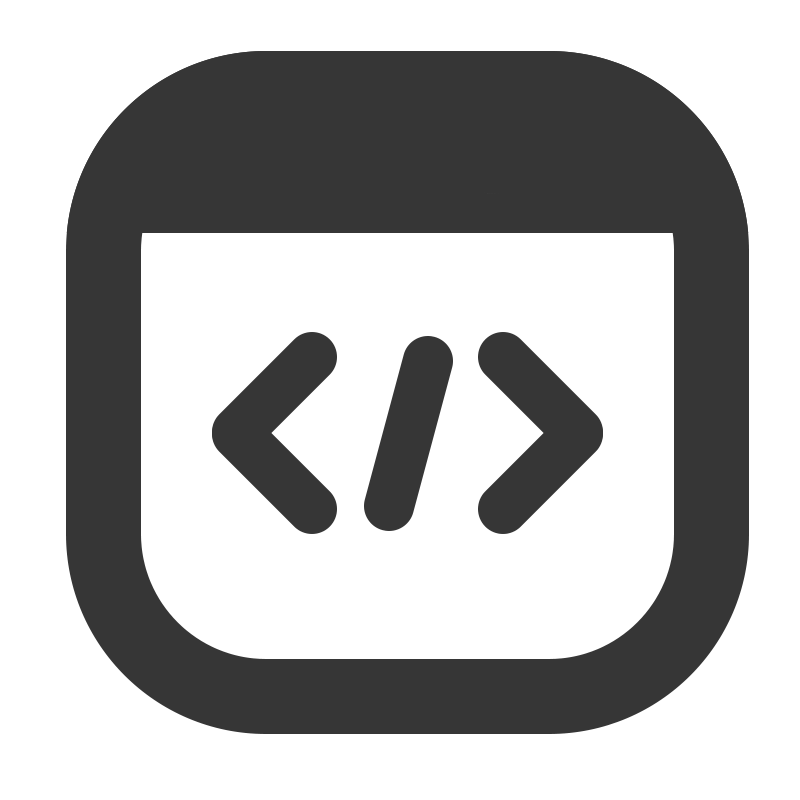

I'm a Computer Science undergraduate at Nanyang Technological University (NTU), Singapore.
I grew up with a passion for games and have been playing them for as long as I could remember.
Originally from Nanyang Polytechnic with a Diploma in Game Development & Technology,
I joined the world of Computer Science to expand my field of knowledge beyond just game development.
My coursework and projects at NTU have allowed me to delve into diverse fields such as software engineering,
artificial intelligence, and data structures.
What i'm interested in
Game development
Crafting unique and interactive experiences for players through coding.

Game design
Designing engaging gameplay experiences and intuitive user interfaces.

Mobile app development
Creating user-friendly mobile applications with sleek and intuitive designs.

Web development
Developing dynamic and responsive websites for an optimal user experience.
Devlog
Currently working on learning Unreal Engine with a focus on combat mechanics!
Overhauling the game and the road ahead
It’s been quite a while since the last devlog, but a lot has happened behind the scenes. Over the past few months, I’ve significantly overhauled the game, starting with a full replacement of the original animation assets.
This change immediately elevated how combat feels, and it also gave me the opportunity to revisit and clean up large parts of the multiplayer netcode alongside it.
With the new animations in place, I expanded the combat system with several new mechanics. Players can now dodge, perform a perfect dodge for precise timing, and block incoming attacks.
To improve readability during fast-paced exchanges, I also added hit indicators that signal when an opponent is about to attack, helping players make better moment-to-moment decisions.
On top of that, I spent time fine-tuning the overall combat flow so that attacks, movement, and defensive actions transition more smoothly into one another.
Another major addition is a simple AI-controlled bot that players can practice against. While it’s not meant to be overly complex, it provides a consistent way to test combat mechanics, timings, and balance without needing a second player connected.
The video demo shows gameplay footage against a bot.
At this stage, my focus has shifted slightly from pure systems work to figuring out the game’s overall style and aesthetic. I want to ensure the visuals and presentation properly support the feel of the combat before pushing further with content.
Looking ahead, I’m also planning to explore options for online multiplayer services, as the game currently only supports multiplayer over local networks.
There’s still plenty to refine, but the game now feels far more cohesive than it did a few months ago, and I’m excited to start shaping its identity as I move into the next phase of development.
Multiplayer: LAN and combat replication
I implemented multiplayer replication for combat and started testing the game across two devices on a local network this week. Initially, I ran into several connection issues—I only realized later
that my laptop couldn't even ping my PC through the command line (lol). Once I fixed the network issue, the multiplayer session worked as expected.
During testing, I made an interesting observation: even though my laptop isn't designed for gaming and struggled with low framerate and peformance, these limitations also affected how
the client's character appeared on other players' screens. Essentially the performance of one device impacted the representation of that player for everyone else, highlighting an important
consideration for multiplayer optimization.
Overall, this testing session helped me uncover both technical hurdles and subtle performance challenges that I'll need to address as I continue refining the multiplayer experience.
Multiplayer: Basic movement and replication
This week, I focused on implementing the foundations of multiplayer replication in Unreal Engine.
I integrated replication with core systems like player movement and the camera lock-on feature, making sure that actions such as locking onto a target are accurately reflected across all connected clients.
Getting replication to play nicely with the lock-on system was a particular challenge, since each client needs to maintain its own local control while still keeping the server authoritative.
I had to carefully manage when and how target data was sent to the server to avoid desyncs, while ensuring that the player’s camera remained responsive.
Camera lock-on and Refraction trails
This week, I worked on adding a camera lock-on system and refraction trails for player attacks.
The lock-on system lets players fix their view on a chosen enemy, making combat encounters easier to follow while
still keeping the target clearly visible.
I also experimented with Unreal Engine’s Niagara System to build refraction trails that follow attacks.
Getting used to Niagara was challenging at first, but I eventually managed to create striking visual effects that make combat feel more impactful.
Hit feedback
One of the biggest lessons I carried over from my internship at HABBY is that great feedback is what makes or breaks a game’s feel.
With that in mind, I focused on designing hit feedback using three core elements: hitstops, hitflashes, and—most importantly—camera shake.
Together, these details make every hit feel weighty, rewarding, and satisfying for the player.
Extending the combat mechanics
This week, I expanded on the combat system by implementing both light and heavy attacks, along with the ability to fluidly chain them together.
These changes made combat more dynamic and gave players more agency over their playstyle, resulting in a faster, more engaging flow of action.
Prototyping a combo system
After setting up character locomotion, I began experimenting with a prototype combo system for melee combat.
I drew inspiration from combat-heavy titles like For Honor, Absolver, and Sifu.
My initial prototype now allows players to execute a sequence of attacks in quick succession—laying the foundation for a deeper combo-based combat system.
Locomotion
Following my internship at HABBY, I wanted to branch out from Unity and learn Unreal Engine.
I started with the basics of locomotion and character movement.
Coming from a Unity background, the transition to Unreal’s Blueprint system felt daunting at first,
but with the help of tutorials, I quickly got comfortable and began building my first mechanics.
Resume
Technical skills
Languages:
HTML/CSS, JavaScript, Java, C#, C/C++, Python
Tools:
Git, Unreal, Unity, Android Studio, Eclipse, Firebase, React, Ant Design
Design Skills:
Adobe Photoshop, Adobe Premiere Pro
Education
Nanyang Technological University
Aug. 2023 — Present
Bachelor of Computing(Hons) in Computer Science.
CGPA 4.00/5.00
Nanyang Polytechnic
Apr. 2017 — Apr. 2021
Diploma in Game Development & Technlogy
CGPA 3.89/4.00
Experience
Game Developer Intern
May 2025 - Aug. 2025
HABBY
Prototyped and developed an internal gameplay prototype, working closely with designers to implement engaging features in Unity
Analyzed core gameplay mechanics and player engagement strategies from top-performing mobile titles to guide internal game design
Drove rapid iteration cycles to refine moment-to-moment gameplay, enhancing overall game feel based on data-informed decisions
Unity Developer
May 2023 — Nov. 2023
World Overlay Studios
Transitioned from an internship to a part-time role upon commencing university studies
Integrated and implemented gameplay features such as water simulations and runtime character customization
Conducted QA tests and optimized technical aspects
Compiled and documented technical aspects and features of the project
Programming Intern
Nov. 2020 — Feb. 2021
Kingmaker Entertainment
Assisted in the development of a mobile game, contributing to the implementation of gameplay features
Managed the migration of a project from Cocos Creator to Unity
Conducted research and optimization processes for the project
Documented the process of migrating the project from one engine to another